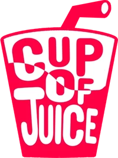

Catpi Corner
Made by Ahsan and noranges of Cup of Juice

A little corner of the world where catpis live. Half caterpillar, half cat, all wiggle. Give them a pat, feed them, give them a bath, throw them a ball, or hatch a brand new one.
Corner news
The notice board
Notes left by people who popped into the corner. A different handful every time you look.
Who are the catpis?
The catpi was dreamed up and drawn by my friend noranges: a caterpillar who is also a cat, or a cat who is also a caterpillar. Nobody is quite sure. Every catpi here is her drawing, coloured in by the page with a different box of crayons.
Their mews and chirps come from the synthesiser in Squimble Sound Studio, each in a voice of its own, and they remember you in this browser.